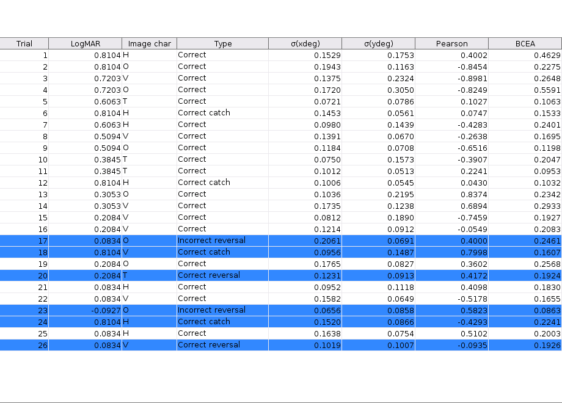
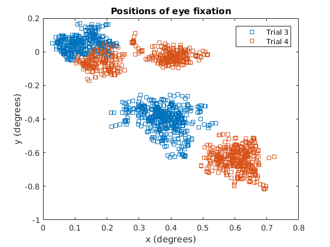
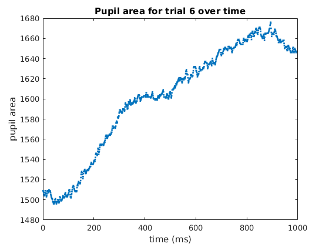
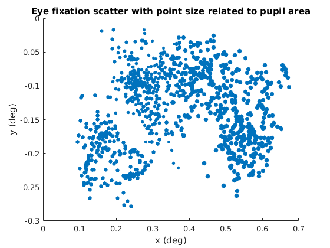
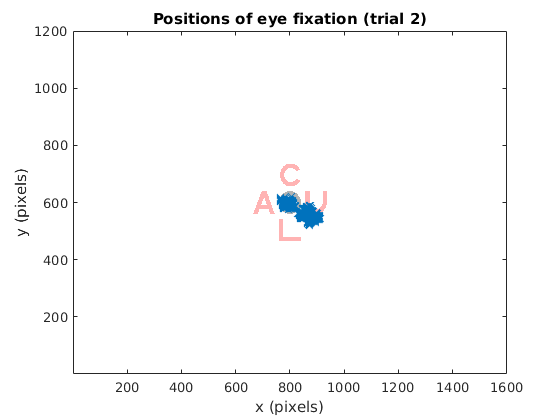

Contents
Preliminaries
% We must first load the data into memory for one particular run. % So we must select the filenames for the data: em_filename = 'eye_movement.asc'; ps_filename = 'psychophysics.txt'; % Enter the screen resolution screen_res = [1600, 1200]; % And read in the data data = read_data(em_filename, ps_filename, screen_res);
View how the data is structured
% The data is stored in an object we have named 'data'.
data
data =
26 Data array with properties:
trial_num: [26x1 double]
logmar: [26x1 double]
type: [26x1 double]
desirable: [26x1 double]
image_char: [26x1 char]
em_data: {26x1 cell}
meta: [1x1 struct]
% You can access any part of the data with the 'dot' syntax, e.g.
data.logmar
ans =
0.8104
0.8104
0.7203
0.7203
0.6063
0.8104
0.6063
0.5094
0.5094
0.3845
0.3845
0.8104
0.3053
0.3053
0.2084
0.2084
0.0834
...% Each data point has associated with it a: % - trial number % - logmar % - type (is the trial a reversal, catch, etc.) % - desirable boolean (is the trial one of the six interesting ones) % - image_char (the letter that was being identified) % - em_data (an object containing fixed eye movement data for the trial) % To access any datum for one particular trial, the index for that trial % must be found. Say we are interested in trial 5. We must find the index % at which trial 5 is stored (this will more than likely, but not % necessarily, also have a value of 5). index = data.index_for_trial(5)
index =
5
% From here, we could examine, say, the 'type' of trial 5. 'data.type' is % an array, and so any value can be accessed with the bracket notation: data.type(index)
ans =
-1
% Although this does represent the 'type' of trial 5, it isn't particularly % helpful. Luckily there's a function to translate this number to a string. % The result of will be one of six possibilities: % - 'Correct catch' % - 'Correct reversal' % - 'Correct' % - 'Incorrect' % - 'Incorrect reversal' % - 'Incorrect catch' (an unusual result, given the size of catch trials) type_str(data.type(index))
ans = Correct
% Before moving on to eye movement data, this is how to select the six % particularly desirable data points from all of the data. Notice that this % has made a copy of 'data', but removed all but six points. It can be % handled in exactly the same way as the previous 'data' variable. desirable_data = data.desirable_data()
desirable_data =
6 Data array with properties:
trial_num: [6x1 double]
logmar: [6x1 double]
type: [6x1 double]
desirable: [6x1 double]
image_char: [6x1 char]
em_data: {6x1 cell}
meta: [1x1 struct]
Eye movement data
% Let's look at trial 5 again, this time picking out the eye movement data % associated with it. I'll save this in a new variable, to avoid excessive % typing. % % There are two things to notice here: % 1. Once we know the index for trial 5, we must use the {} notation to % pick out an eye movement data point. This is because em_data is % stored in a cell array, rather than a normal array. % 2. Because EyeMovementData is a handle class, if we wish to make a copy % we must use the em_data.copy() method as shown below. If we didn't % use the copy() method, then we would only be creating a reference, % or handle, to the data. index = data.index_for_trial(5); em_data = data.em_data{index}.copy()
em_data =
994 EyeMovementData array with properties:
trial_num: 5
time: [994x1 double]
xpix: [994x1 double]
ypix: [994x1 double]
xdeg: [994x1 double]
ydeg: [994x1 double]
pupil_area: [994x1 double]
% Any part of this em_data can also be accessed with 'dot' syntax, e.g.
em_data.trial_num
ans =
5
% Now we could, say, calculate the BCEA for this trial % The bcea function takes arguments in the form bcea(x data, y data, k) bcea(em_data.xdeg, em_data.ydeg, 3)
ans =
0.1063
% Perhaps now though we want to look only at a certain time period in the % data, for example for time 101ms -> 300ms em_data.set_limits(101, 300); % Now the eye movement data is different, with only 200 data points) em_data
em_data =
994 EyeMovementData array with properties:
trial_num: 5
time: [200x1 double]
xpix: [200x1 double]
ypix: [200x1 double]
xdeg: [200x1 double]
ydeg: [200x1 double]
pupil_area: [200x1 double]
% The bcea is also different:
bcea(em_data.xdeg, em_data.ydeg, 3)
ans =
0.0525
% Note that the extra data points for time not equal to 101->300ms are % still saved. The size() method will give the original size of the data... em_data.size()
ans = 994
% ...and the limits can be easily removed to look at the whole time period % again. em_data.remove_limits();
% There are also functions to calculate Pearson's cofficient, standard % deviations of x and y, and a function that returns an array showing how % the BCEA value progresses over time. pearsons_coefficient = pearson(em_data.xdeg, em_data.ydeg); standard_deviation_of_xdeg = std(em_data.xdeg); array_of_bcea_progression = bcea_progression(em_data.xdeg, em_data.ydeg, 3);
Meta data
% Going back to the object containing all the data from this file, there is % another field as yet unexplained - data.meta. It contains info extracted % from the psychophysics file and uniquely identifies the experimental run. data.meta
ans =
flank: 'Similar'
color: 'Red'
luminance: -0.3000
How to plot graphs with the data
% First things first, let's print a table of all the data print_table(data); set(gcf, 'Position', [0 0 920 660]); % Expand window containing the table
% There are two ways to plot graphs. Using the pre-made functions, or % plotting something manually. % The pre-made functions are: % - plot_xy(em_data) % - plot_hist(em_data) % - plot_scatter(em_data, add_as_series) % - plot_bcea_progression(em_data, add_as_series) % - plot_background(em_data, background_filename) % - print_gif(em_data, filename) % - plot_logmar_bcea(data) % Descriptions for all of these are included as comments at the start of % the function and should therefore be available to view in Matlab help.
% Let's look at plot_scatter() as an example. It takes two arguments, the % first being an object containing some eye movement data (em_data), and % the second being a boolean 'add_as_series' that asks whether to add this % eye movement data as a series on top of a previous plot (if a previous % plot exists). % Usage might be as follows (for example's sake, we are examining eye % movement data for trial 3): index = data.index_for_trial(3); plot_scatter(data.em_data{index}.copy(), false); % Now, assuming we wish to examine the eye movement scatter for trial 4 on % the same graph, we could write: index = data.index_for_trial(4); plot_scatter(data.em_data{index}.copy(), true);
% The plot_scatter() function should produce a sensible plot with labelled % axes, but if something different is desired then plotting manually might % be sensible (or indeed you could edit the function itself if you wished). % To give an example, let's plot something for which there is (currently) % no function. Perhaps the pupil size data over time for trial 6. We will % use the standard Matlab function plot(). index = data.index_for_trial(6); em_data = data.em_data{index}.copy(); plot(em_data.time, em_data.pupil_area, '.'); xlabel('time (ms)'); ylabel('pupil area'); title('Pupil area for trial 6 over time');
% Perhaps we wish to combine this pupil area data with position data. We % could plot a scatter where the size of the points is related (not % proportionally though) to the area of the pupil. scatter(em_data.xdeg, em_data.ydeg,... (em_data.pupil_area/1000).^7, 'filled'); xlabel('x (deg)'); ylabel('y (deg)'); title('Eye fixation scatter with point size related to pupil area');
% As a final example, let's draw a scatter graph over a background image of % the actual letter presented to the subject in the experiment. % First, we can use a function provided to find the filename of the .BMP % associated with the trial that we wish to examine (say trial 2). We must % include the directory containing all the BMP files for it to search in % (in this case that is '../stick/bmp'. Inside this directory must be all % .BMP files individually, as the function will not look in subdirectories. bg_filename = bmp_filename(data, 2, '../stick/bmp'); plot_background(data.em_data{data.index_for_trial(2)}, bg_filename);
Using the GUI
% There is a gui program to easily make use of all the built-in functions. % Launch it by typing 'gui' % The gui contains file dialogs to select the correct data files (and, if % you wish, the location of the background .BMP files). % % There is then a button labelled 'Read data from files'. This will load % everything into memory, making the additional functions on the gui % appear. % % It will also load a copy of the data into the Matlab workspace as a % variable called 'data'. Therefore, the gui can be a convenient way to % load in data from files, even if the rest of its functionality is % undesired.